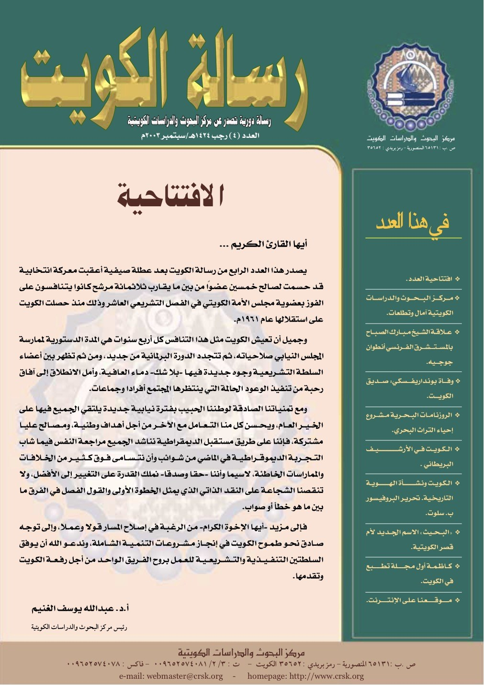
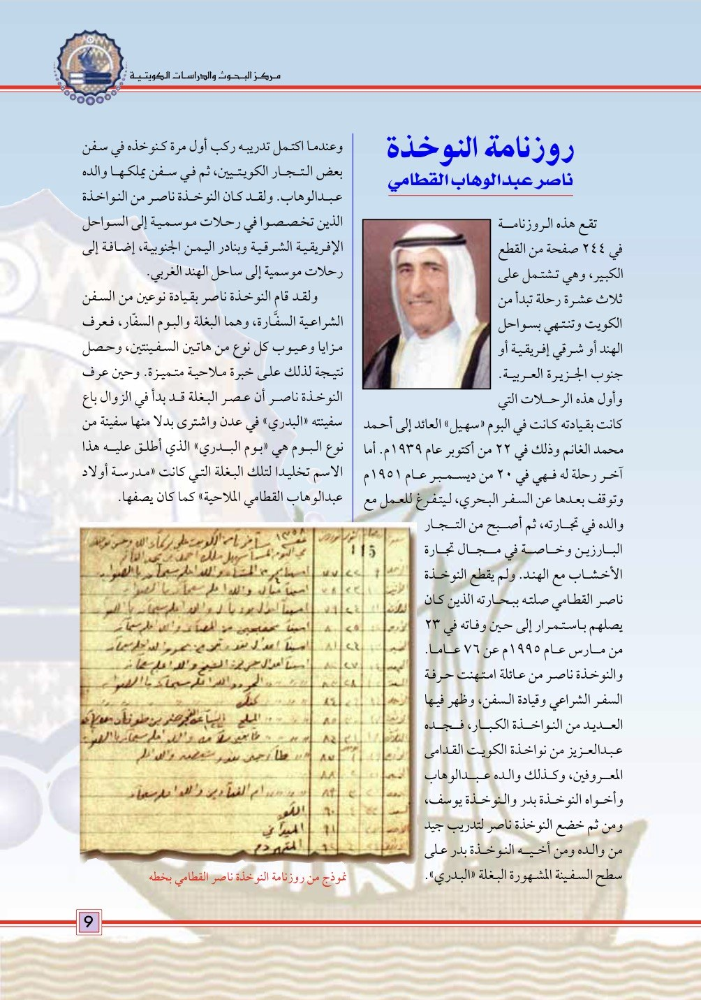

١٩٣٩ إلى ١٩٥١م، نشر سبتمبر ٢٠٠٣م · صفحات من مجلة رسالة الكويت، العدد ٤، رجب ١٤٢٤هـ (سبتمبر ٢٠٠٣م)، مركز البحوث والدراسات الكويتية، ص ٩
روزنامة النوخذة ناصر عبدالوهاب القطامي: ثلاث عشرة رحلة، ١٩٣٩ إلى ١٩٥١م
ما هي
تقع روزنامة النوخذة ناصر عبدالوهاب القطامي في ٢٤٤ صفحة من القطع الكبير، وتشتمل على ثلاث عشرة رحلة تبدأ من الكويت وتنتهي بسواحل الهند أو شرقي أفريقية أو جنوب الجزيرة العربية. وأول رحلاته بقيادته كانت في البوم «سهيل» العائد إلى أحمد محمد الغانم في ٢٢ أكتوبر ١٩٣٩م، وآخرها في ٢٠ ديسمبر ١٩٥١م، وتوقف بعدها عن السفر البحري ليتفرغ للعمل مع والده في تجارته، ثم أصبح من التجار البارزين وخاصة في تجارة الأخشاب مع الهند. وتوفي في ٢٣ مارس ١٩٩٥م عن ٧٦ عاما. وهو من عائلة امتهنت السفر الشراعي وقيادة السفن، فجده عبدالعزيز من نواخذة الكويت القدامى، وكذلك والده عبدالوهاب وأخواه النوخذة بدر والنوخذة يوسف. تدرب على يد والده وأخيه النوخذة بدر على سطح البغلة المشهورة «البدري»، وركب أول مرة كنوخذة في سفن بعض التجار الكويتيين ثم في سفن والده، وتخصص في الرحلات الموسمية إلى السواحل الأفريقية الشرقية وبنادر اليمن الجنوبية وساحل الهند الغربي، وقاد البغلة والبوم السفار. وحين بدأ عصر البغلة في الزوال باع «البدري» في عدن واشترى بدلا منها بوما أطلق عليه «بوم البدري» تخليدا للبغلة التي كان يصفها بـ«مدرسة أولاد عبدالوهاب القطامي الملاحية». مع صفحة من الروزنامة بخطه.
أهميتها
رواية منشورة لمسيرة ناصر عبدالوهاب القطامي البحرية مبنية على روزنامته، بتواريخ دقيقة لأول رحلاته وآخرها، وقصة «البدري».
صور الصفحات


المصادر
«روزنامة النوخذة ناصر عبدالوهاب القطامي»، رسالة الكويت، العدد ٤، رجب ١٤٢٤هـ (سبتمبر ٢٠٠٣م)، مركز البحوث والدراسات الكويتية، ص ٩
كيف كُتب هذا النص: قد يتابع المقال في الصفحة ١٠، ولم ترسل. ولا يظهر اسم الكاتب في الصفحة ٩.
افتح في الموقع التفاعلي